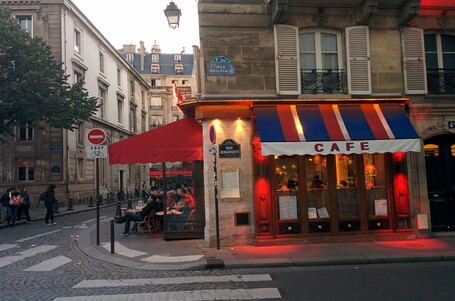

Siempre tendremos París. 7 días en la capital revolucionaria.
Francia aparece en nuestra ruta con un tiempo especial, es el país al que más días le vamos a dedicar, sin contar Dinamarca, claro. Nos llama, casi con señales de humo desesperadas, desde su atrapante historia, su famosa cocina, la naturaleza…básicamente todos los elementos que constituyen el significado de cultura. Quitamos del itinerario nuestro paso por Holanda y Bélgica. Debes estar pensado “estos boludos se están perdiendo de dos países sumamente interesantes”, y sí, lo sabemos. Es que si miramos en el mapa, todo nos seduce, pero nos fuimos de Suiza con aguanieve y cinco grados bajo cero.
Seguir leyendo